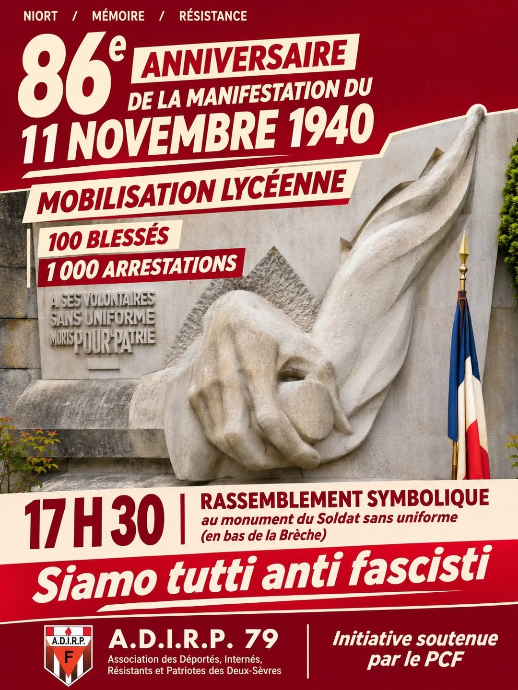

Publication du PCF 79
11 novembre. Notre appel à se rassembler pour la mémoire de 1940
Date indiquée par Facebook · 9 novembre 2026
Légende originale du PCF 79
On se rassemble le 11 novembre pour ensemble se rappeler, pour commémorer cette première manifestation libre face au fascisme.
Repères éditoriaux
À Niort, nous avons appelé à nous rassembler le 11 novembre pour honorer les lycéens et étudiants qui ont défié l’Occupation. Le compte rendu de la cérémonie permet de retrouver la suite de ce rendez-vous.

Sources
PCF 79 · relevé Meta et fil Facebook · FB-1463318715981377
À lire aussi · À Niort, nous avons rendu hommage aux jeunes qui ont défié l’Occupation